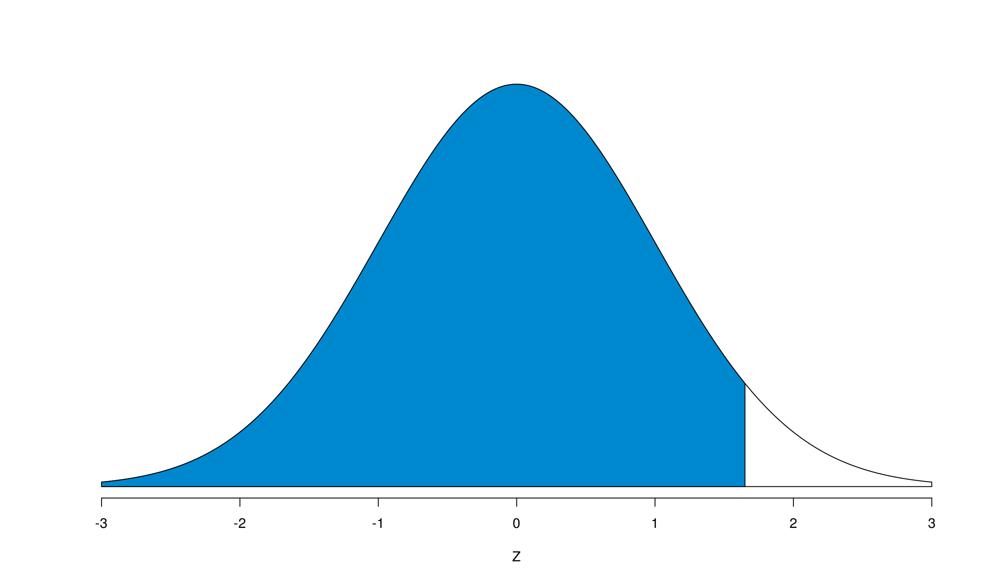
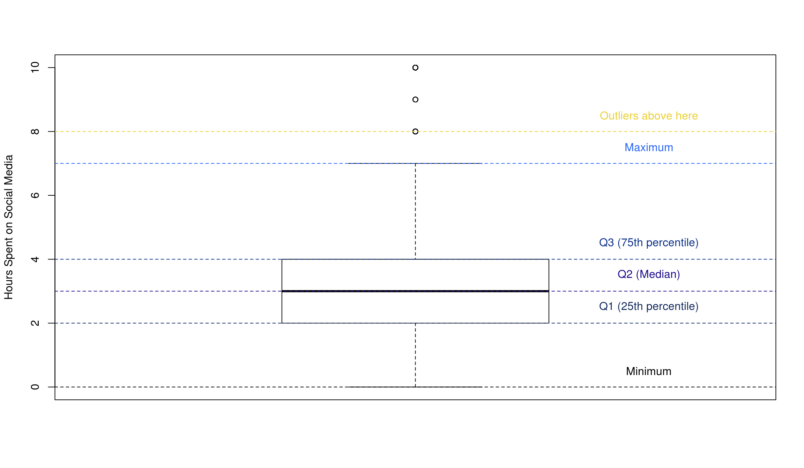
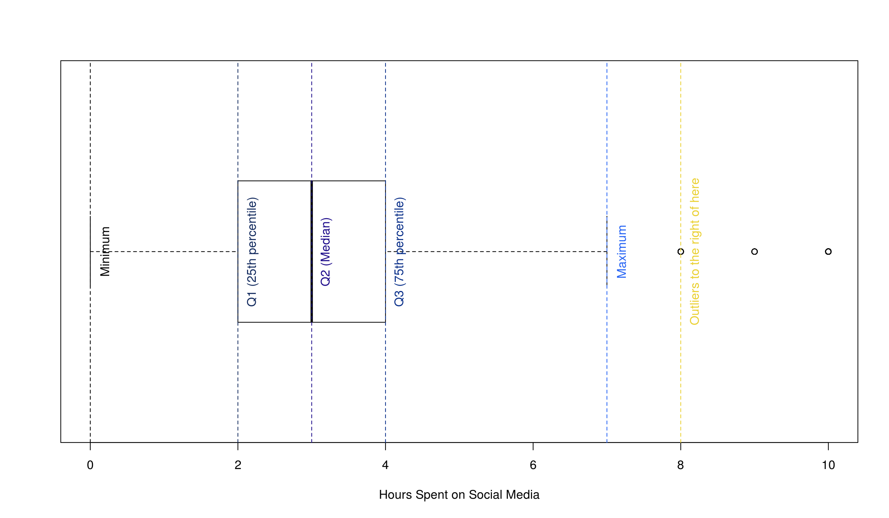
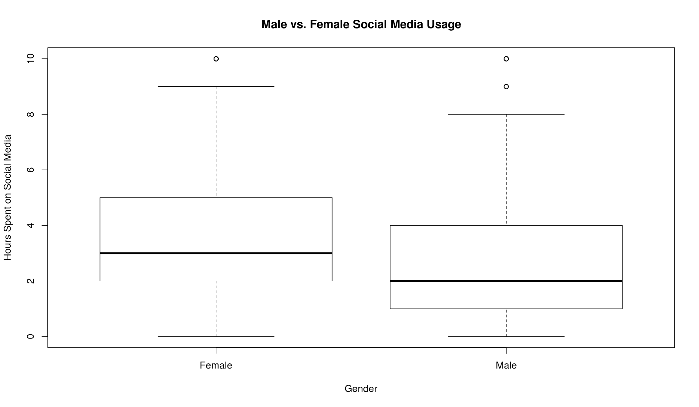

Chapter 11 Percentiles and Box Plots
11.1 Percentiles
Normal curves, averages, standard deviations, and Z-scores may seem like they provide all the information needed to understand a simple set of data. But what about when it doesn’t? Take for example a standardized test. We may not necessarily care what percentage a particular student got on the exam, but we’re more likely concerned with comparing that student with the rest of their peers. Are they ahead? Are they behind? Luckily, we can make use of percentiles to help answer these types of questions.
What is a percentile? It’s the area to the left of a given Z-score, or the percentage of data less than the one you’re examining. In other words, being in the \(n\)th percentile means having a Z-score such that \(n\)% of the area is to our left. In our standardized test example, it’s the percentage of people you scored better than. To calculate a percentile by hand, we’d first find the Z-score, then get the corresponding middle areas from our chart, compute the tails, and add the area to the left of our calculated Z-score.
{kind=link}
Graphically, it looks something like this:

Wait a second… We’ve seen this graph before! Where? Oh right, when we talked about the pnorm() function and its output. In fact, this is the output of pnorm(), so appropriately using the pnorm() function will quickly calculate the percentile for us.
Pro tip about percentiles: the Z-scores for opposite percentiles (i.e. for the 5th and 95th percentiles) are the same sign but opposite magnitude.
To check this, we can pick an arbitrary Z-score (say, 1.7), calculate that percentile, and add the percentile of Z = -1.7, and the results should be 100%. Let’s check:
100 * (pnorm(1.7) + pnorm(-1.7))[1] 10011.2 Quartiles
There’s a few “special” percentiles that we like to use a lot: the 25th, 50th, and 75th percentiles. These are what we call quartiles. As you can see, these quartiles are each quarter of the way across the normal curve. We usually refer to them as Q1, Q2, and Q3 respectively. The interquartile range, or IQR for short, is defined to be Q3 - Q1.
We use the IQR to determine if a data point is an outlier. Outliers come in two forms: lower outliers and upper outliers. To check if a point is a lower outlier, it must have a value that is less than Q1 - 1.5 \(\cdot\) IQR. For upper outliers, a point must have a value of Q3 + 1.5 \(\cdot\) IQR.
11.3 Box Plots and boxplot()
Quartiles are especially useful when we want to visualize our data in a different way than a histogram or normal curve. We can employ something called a box plot, which visually shows us a summary of our data. Let’s take a look at one and how all its parts fit together. We’ll use the combined survey results from Survey 2 from Fall 2017 to make a histogram of the texts variable. You can download the data here and find the data description here.

We could also draw the same plot horizontally. It’s good to be able to analyze a box plot in both ways.

To draw these box plots, we just make use of the boxplot() function. If you only wish to view a box plot for a given set of numbers (like we did above), you just need to supply the name of the vector that the data is contained in. R takes care of all of the computations and plotting for you, but you’re more than welcome to play with the colors and labels as you see fit.
Box plots, however, are also useful at comparing groups. For example, if we wanted to split our data up according to the gender variable in the dataset, box plots will easily illustrate the differences between the genders. The boxplot() function handles this easily by making use of something called formula syntax. It reads as y ~ x, where y is the variable you want on the \(y\)-axis, the ~ means “on” or “versus”, and the x is the variable you’d like on the \(x\)-axis. Note: the survey data has been imported as a data frame called survey2.
boxplot(
survey2$socialMedia ~ survey2$gender,
xlab = 'Gender',
ylab = 'Hours Spent on Social Media',
main = 'Male vs. Female Social Media Usage'
)
As you can see from this plot, females tend to spend more time on social media than males (see the higher Q2 bar?), although the middle 50% – our good friend the IQR – of each gender is within 3 hours of each other. For females, the IQR goes from 2 to 5, and for males, it goes from 1 to 4.
11.4 Summary and summary()
We’ve now got a wide variety of statistics – mean, median, minimum, maximum, Q1 and Q3 – we know how to use and calculate both in R and by hand, but wouldn’t it be nice if there was a way to quickly calculate all of these functions for multiple (numeric) variables in our data frames all at once? Well, guess what? There is! It’s the summary() command, and it does exactly that: provides a summary of the data. Here’s the summary of survey2.
summary(survey2) gender genderID greek
Length:1575 Length:1575 Length:1575
Class :character Class :character Class :character
Mode :character Mode :character Mode :character
homeTown ethnicity religion religious
Length:1575 Length:1575 Length:1575 Min. : 0.000
Class :character Class :character Class :character 1st Qu.: 1.000
Mode :character Mode :character Mode :character Median : 4.000
Mean : 3.882
3rd Qu.: 6.000
Max. :10.000
likeMath calculus ACT GPA
Min. : 0.000 Length:1575 Min. :12.00 Min. :1.000
1st Qu.: 3.000 Class :character 1st Qu.:25.00 1st Qu.:3.200
Median : 5.000 Mode :character Median :28.00 Median :3.600
Mean : 5.144 Mean :27.65 Mean :3.446
3rd Qu.: 7.000 3rd Qu.:31.00 3rd Qu.:3.800
Max. :10.000 Max. :36.00 Max. :4.000
partyHr drinks sexPartners relationships
Min. : 0.000 Min. : 0.000 Min. : 0.000 Min. : 0.000
1st Qu.: 0.000 1st Qu.: 0.000 1st Qu.: 0.000 1st Qu.: 0.000
Median : 4.000 Median : 2.000 Median : 1.000 Median : 1.000
Mean : 5.426 Mean : 6.554 Mean : 2.924 Mean : 1.241
3rd Qu.: 8.000 3rd Qu.:10.000 3rd Qu.: 3.000 3rd Qu.: 2.000
Max. :50.000 Max. :50.000 Max. :50.000 Max. :25.000
callParents socialMedia texts goodOrWell
Min. : 0.000 Min. : 0.000 Min. : 0.000 Min. : 0.000
1st Qu.: 1.000 1st Qu.: 2.000 1st Qu.: 3.000 1st Qu.: 5.000
Median : 3.000 Median : 3.000 Median : 5.000 Median : 5.000
Mean : 4.435 Mean : 3.352 Mean : 5.627 Mean : 5.554
3rd Qu.: 5.500 3rd Qu.: 4.000 3rd Qu.: 7.000 3rd Qu.: 7.000
Max. :50.000 Max. :10.000 Max. :50.000 Max. :10.000
expectedIncome president DACA liberal
Min. : 1 Length:1575 Min. : 0.000 Min. : 0.000
1st Qu.: 80 Class :character 1st Qu.: 0.000 1st Qu.: 2.000
Median : 100 Mode :character Median : 0.000 Median : 4.000
Mean : 1815 Mean : 2.029 Mean : 3.963
3rd Qu.: 200 3rd Qu.: 4.500 3rd Qu.: 5.000
Max. :99999 Max. :10.000 Max. :10.000
politicalParty gradeVsLearning parentRelationship workHr
Length:1575 Min. : 0.000 Min. : 0.000 Min. : 0.000
Class :character 1st Qu.: 4.000 1st Qu.: 7.000 1st Qu.: 0.000
Mode :character Median : 5.000 Median : 8.000 Median : 0.000
Mean : 4.723 Mean : 7.733 Mean : 5.435
3rd Qu.: 6.000 3rd Qu.: 9.000 3rd Qu.:10.000
Max. :10.000 Max. :10.000 Max. :50.000
tuition career
Min. : 0.00 Min. : 0.000
1st Qu.: 20.00 1st Qu.: 4.000
Median : 90.00 Median : 7.000
Mean : 64.93 Mean : 5.988
3rd Qu.:100.00 3rd Qu.: 8.000
Max. :100.00 Max. :10.000 There you have it! A quick, easy way to get the information you need about the data that you care about.